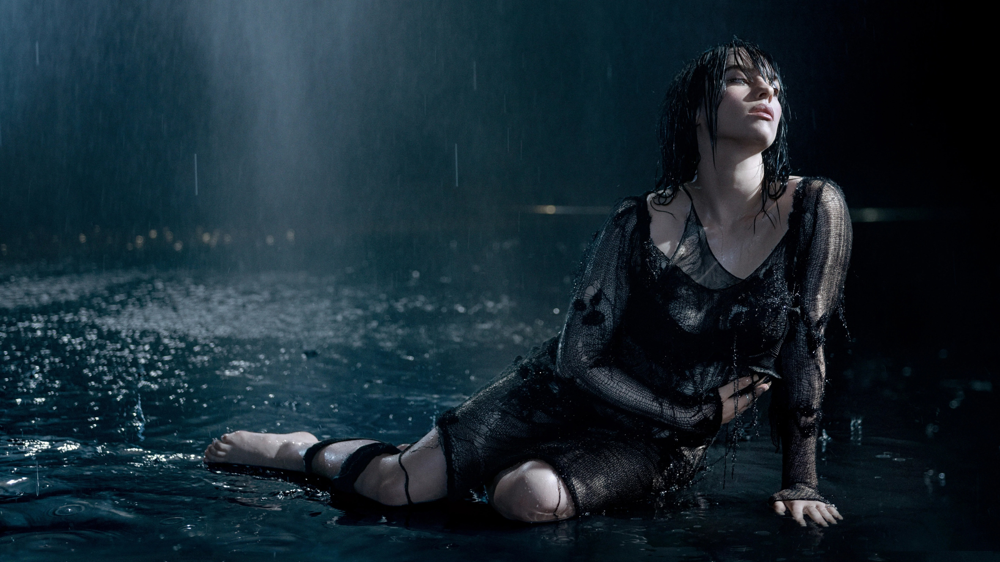

Happier Than Ever Era
Billie Eilish's second album released in 2021

Billie Eilish No.2
Billie Eilish's second perfume released in 2022

Don't Smile at Me
Billie Eilish's first EP released in 2017
 Spotify
Spotify